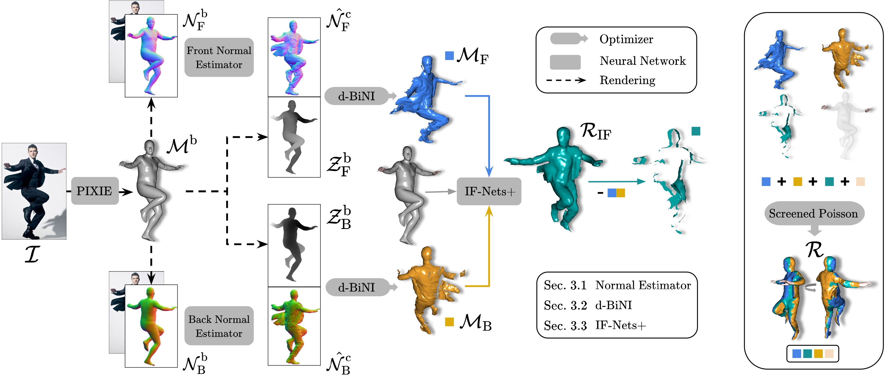
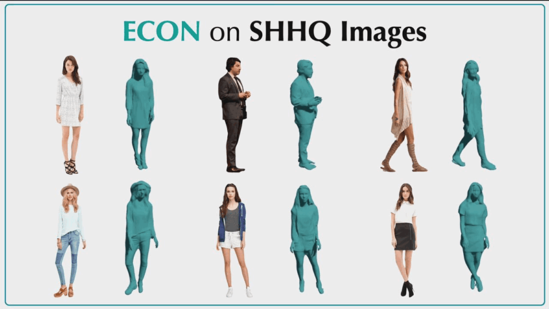

Method Overview

ECON takes as input an RGB image, $\mathcal{I}$, and a SMPL-X
body, $\mathcal{M}^\text{b}$. Conditioned on the rendered front
and back body normal images, $\mathcal{N}^\text{b}$, ECON first
predicts front and back clothing normal maps,
$\hat{\mathcal{N}^\text{c}}$. These two normals along with body
depth maps, $\mathcal{Z}^\text{b}$, are fed into a d-BiNI
optimizer to produce front and back surfaces,
$\{\mathcal{M}_\text{F}, \mathcal{M}_\text{B}\}$. Based on such
partial surfaces, and body estimate $\mathcal{M}^\text{b}$,
IF-Nets+ implicitly completes $\mathcal{R}_\text{IF}$. With
optional face or hands from $\mathcal{M}^\text{b}$, screened
Poisson combines above all as final watertight $\mathcal{R}$.
ECON Applications
|  |

|
|---|---|
| Pseudo 3D Ground-truth for SHHQ Dataset | Multi-person Reconstruction |
Related Links
For more work on similar tasks, please check out the following papers.
- ICON and PaMIR reconstruct 3D clothed human from single image using Implicit Function and Explicit SMPL mesh.
- PIFu, PIFuHD and MonoPort reconstruct them using Implicit Function without introducing any 3D prior.
- BiNI robustly reconstructs 3D surface from a single normal map, and meanwhile preserves the discontinuity.
- PIXIE and PyMAF-X estimate the expressive SMPL-X body from a single image.
- IF-Nets completes the partial 3D data using implicit feature networks.
- Any-Shot GIN uses similar sandwich structure to estimate 3D shapes of novel classes from single RGB image.
Acknowledgments & Disclosure
We thank
Lea Hering and
Radek Daněček for
proof reading,
Yao Feng,
Haven Feng, and
Weiyang Liu for their feedback
and discussions,
Tsvetelina Alexiadis
for her help with the AMT perceptual study. This project has
received funding from the European Union’s Horizon 2020 research
and innovation programme under the Marie Skłodowska-Curie grant
agreement No.860768 (CLIPE Project).
MJB has received research gift funds from Adobe, Intel, Nvidia, Meta/Facebook, and Amazon. MJB has financial interests in Amazon, Datagen Technologies, and Meshcapade GmbH. While MJB is a part-time employee of Meshcapade, his research was performed solely at, and funded solely by, the Max Planck Society.
MJB has received research gift funds from Adobe, Intel, Nvidia, Meta/Facebook, and Amazon. MJB has financial interests in Amazon, Datagen Technologies, and Meshcapade GmbH. While MJB is a part-time employee of Meshcapade, his research was performed solely at, and funded solely by, the Max Planck Society.